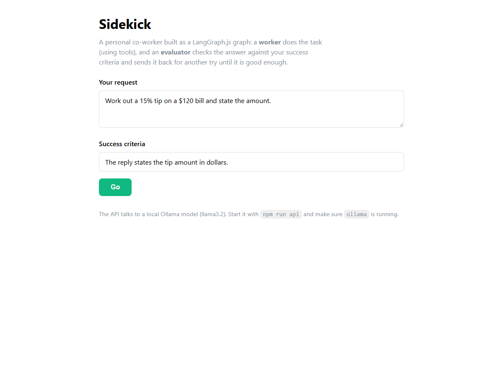

Week 4 · Day 5 — Finishing the Sidekick
Add web search, a file system and a Python REPL tool, isolate each user's session, and wire it to a Gradio UI. Python and a React + TypeScript version.
Companion to Ed Donner's course · uv setup · Python (+ TypeScript/React where it fits) · code from the course repoThe last day of the week finishes the Sidekick. The worker/evaluator loop from day 4 does not change at all; what changes is how much the worker can do. We give it a full tool belt — Serper web search, a file manager, a Python runner, Wikipedia, and a push notification — split the app into three tidy modules, and make sure each user's session is isolated with its own graph and thread_id. Then we run it behind a Gradio UI.
Three modules
The app is divided into three files, each with one job. This is the same code from the lab, reorganised.
The tool belt
The beauty of the LangChain ecosystem is how many ready-made tools exist. The Sidekick gathers a generous set, all conforming to one tool format, so the worker model can reach any of them.
New to this? Why the date is a prompt, not a tool
The instructor first made a "current date and time" tool, then realised the worker always needs it, so forcing the model to call a tool for it was wasteful. Instead the value is inserted straight into the system prompt every run. This previews a week-6 idea: information you always want available is better supplied as a resource than hidden behind a tool call.
Keeping the file tools in a sandbox
The file tools are confined to a single folder named sandbox. The model can read, write and list
files there but cannot wander across the rest of your disk.
Lesson by lesson
One section per video, in the order you watch them. Each code block is what is on screen in that
video: the course notebook or module as Ed recorded it in April 2025. Some of what he uses has since changed
(the gpt-4o-mini model is retired, LangChain 1.0 moved Tool, Gradio 6 dropped
type="messages"), so where that matters the Python block has two versions: As in the
video and Runs today (the same code with only those lines changed, each marked with a
comment). The TypeScript tab is a port of the "runs today" version with LangGraph.js
(@langchain/langgraph); where the Python code opens a Gradio window, the TypeScript port chats in the
terminal instead.
Video 18 · Day 5 begins: tools, a warning, and the three modules
Slides, then Cursor. Today the Sidekick gets more tools: web search with Serper, push notifications,
file access, Wikipedia and a Python runner. Ed's two warnings: use it at your own risk (it browses with an open-source
Chromium that has none of your passwords or cookies, the file tools stay in one folder, but the Python tool can run
anything), and treat it as a canvas, not a finished product: it will need your own prompts and tools to
stay on track. He has already used it for real paid work. Then a quick tour of the three modules shown in the diagram at
the top of this page: sidekick_tools.py, sidekick.py and app.py. No code is
explained yet.
Video 19 · sidekick_tools.py, then the top of sidekick.py
Ed reads through the tools module, then opens sidekick.py: the same code as the Day 4
notebook, moved into a module. First the State, the evaluator's schema, and the Sidekick class's
__init__ and async setup.
sidekick_tools.py
from playwright.async_api import async_playwright
from langchain_community.agent_toolkits import PlayWrightBrowserToolkit
from dotenv import load_dotenv
import os
import requests
from langchain.agents import Tool
from langchain_community.agent_toolkits import FileManagementToolkit
from langchain_community.tools.wikipedia.tool import WikipediaQueryRun
from langchain_experimental.tools import PythonREPLTool
from langchain_community.utilities import GoogleSerperAPIWrapper
from langchain_community.utilities.wikipedia import WikipediaAPIWrapper
load_dotenv(override=True)
pushover_token = os.getenv("PUSHOVER_TOKEN")
pushover_user = os.getenv("PUSHOVER_USER")
pushover_url = "https://api.pushover.net/1/messages.json"
serper = GoogleSerperAPIWrapper()
async def playwright_tools():
playwright = await async_playwright().start()
browser = await playwright.chromium.launch(headless=False)
toolkit = PlayWrightBrowserToolkit.from_browser(async_browser=browser)
return toolkit.get_tools(), browser, playwright
def push(text: str):
"""Send a push notification to the user"""
requests.post(pushover_url, data = {"token": pushover_token, "user": pushover_user, "message": text})
return "success"
def get_file_tools():
toolkit = FileManagementToolkit(root_dir="sandbox")
return toolkit.get_tools()
async def other_tools():
push_tool = Tool(name="send_push_notification", func=push, description="Use this tool when you want to send a push notification")
file_tools = get_file_tools()
tool_search =Tool(
name="search",
func=serper.run,
description="Use this tool when you want to get the results of an online web search"
)
wikipedia = WikipediaAPIWrapper()
wiki_tool = WikipediaQueryRun(api_wrapper=wikipedia)
python_repl = PythonREPLTool()
return file_tools + [push_tool, tool_search, python_repl, wiki_tool]from playwright.async_api import async_playwright
from langchain_community.agent_toolkits import PlayWrightBrowserToolkit
from dotenv import load_dotenv
import os
import requests
# LangChain 1.0 removed Tool from langchain.agents (the video imports it from there)
from langchain_core.tools import Tool
from langchain_community.agent_toolkits import FileManagementToolkit
from langchain_community.tools.wikipedia.tool import WikipediaQueryRun
from langchain_experimental.tools import PythonREPLTool
from langchain_community.utilities import GoogleSerperAPIWrapper
from langchain_community.utilities.wikipedia import WikipediaAPIWrapper
import wikipedia
load_dotenv(override=True)
pushover_token = os.getenv("PUSHOVER_TOKEN")
pushover_user = os.getenv("PUSHOVER_USER")
pushover_url = "https://api.pushover.net/1/messages.json"
serper = GoogleSerperAPIWrapper()
# Not in the video: Wikimedia now rejects the wikipedia library's default user agent,
# so give your app a descriptive name of its own
wikipedia.set_user_agent("my-sidekick-app/1.0 (learning project)")
async def playwright_tools():
playwright = await async_playwright().start()
browser = await playwright.chromium.launch(headless=False)
toolkit = PlayWrightBrowserToolkit.from_browser(async_browser=browser)
return toolkit.get_tools(), browser, playwright
def push(text: str):
"""Send a push notification to the user"""
requests.post(pushover_url, data = {"token": pushover_token, "user": pushover_user, "message": text})
return "success"
def get_file_tools():
toolkit = FileManagementToolkit(root_dir="sandbox")
return toolkit.get_tools()
async def other_tools():
push_tool = Tool(name="send_push_notification", func=push, description="Use this tool when you want to send a push notification")
file_tools = get_file_tools()
tool_search =Tool(
name="search",
func=serper.run,
description="Use this tool when you want to get the results of an online web search"
)
wikipedia = WikipediaAPIWrapper()
wiki_tool = WikipediaQueryRun(api_wrapper=wikipedia)
python_repl = PythonREPLTool()
return file_tools + [push_tool, tool_search, python_repl, wiki_tool]// sidekick-tools.ts: every tool the Sidekick can use (port of sidekick_tools.py).
// Keep it next to sidekick.ts and app.ts, then run: npx tsx app.ts
import "dotenv/config";
import { chromium, type Browser } from "playwright";
import { tool, type StructuredToolInterface } from "@langchain/core/tools";
import { z } from "zod";
import { mkdir, readFile, writeFile, readdir } from "node:fs/promises";
import { resolve, sep } from "node:path";
import { execFile } from "node:child_process";
import { promisify } from "node:util";
const pushoverToken = process.env.PUSHOVER_TOKEN;
const pushoverUser = process.env.PUSHOVER_USER;
const pushoverUrl = "https://api.pushover.net/1/messages.json";
// The browser tools. Python gets these from LangChain's PlayWrightBrowserToolkit;
// here we write the main ones ourselves with the playwright package (same tool names).
export async function playwrightTools(): Promise<{ tools: StructuredToolInterface[]; browser: Browser }> {
const browser = await chromium.launch({ headless: false });
const page = await browser.newPage();
const tools = [
tool(async ({ url }) => {
const response = await page.goto(url);
return `Navigating to ${url} returned status code ${response?.status() ?? "unknown"}`;
}, {
name: "navigate_browser",
description: "Navigate a browser to the specified URL",
schema: z.object({ url: z.string().describe("the full URL to open") }),
}),
tool(async () => (await page.innerText("body")).slice(0, 20_000), {
name: "extract_text",
description: "Extract all the text on the current webpage",
schema: z.object({}),
}),
tool(async () => {
const links = await page.locator("a[href]").evaluateAll((anchors) =>
anchors.map((a) => ({ text: a.textContent?.trim() ?? "", href: a.getAttribute("href") ?? "" })));
return JSON.stringify(links.slice(0, 200));
}, {
name: "extract_hyperlinks",
description: "Extract all hyperlinks on the current webpage",
schema: z.object({}),
}),
tool(async ({ selector }) => {
await page.click(selector, { timeout: 5_000 });
return `Clicked element '${selector}'`;
}, {
name: "click_element",
description: "Click on an element with the given CSS selector",
schema: z.object({ selector: z.string().describe("CSS selector for the element to click") }),
}),
tool(async () => {
await page.goBack();
return `Navigated back to ${page.url()}`;
}, { name: "previous_webpage", description: "Navigate back to the previous page in the browser history", schema: z.object({}) }),
tool(async () => page.url(), {
name: "current_webpage",
description: "Returns the URL of the current page",
schema: z.object({}),
}),
];
return { tools, browser };
}
export async function push(text: string): Promise<string> {
await fetch(pushoverUrl, {
method: "POST",
body: new URLSearchParams({ token: pushoverToken ?? "", user: pushoverUser ?? "", message: text }),
});
return "success";
}
// File tools, pinned to the sandbox folder like FileManagementToolkit(root_dir="sandbox")
const SANDBOX = resolve("sandbox");
function inSandbox(path: string): string {
const full = resolve(SANDBOX, path);
if (full !== SANDBOX && !full.startsWith(SANDBOX + sep)) throw new Error("Access denied: outside the sandbox");
return full;
}
export function getFileTools(): StructuredToolInterface[] {
return [
tool(async ({ file_path }) => readFile(inSandbox(file_path), "utf-8"), {
name: "read_file",
description: "Read file from disk",
schema: z.object({ file_path: z.string().describe("name of file") }),
}),
tool(async ({ file_path, text }) => {
await mkdir(SANDBOX, { recursive: true });
await writeFile(inSandbox(file_path), text, "utf-8");
return `File written successfully to ${file_path}.`;
}, {
name: "write_file",
description: "Write file to disk",
schema: z.object({ file_path: z.string().describe("name of file"), text: z.string().describe("text to write to file") }),
}),
tool(async ({ dir_path }) => {
await mkdir(SANDBOX, { recursive: true });
return (await readdir(inSandbox(dir_path ?? "."))).join("\n") || "No files found";
}, {
name: "list_directory",
description: "List files and directories in a specified folder",
schema: z.object({ dir_path: z.string().optional().describe("subdirectory to list") }),
}),
];
}
async function serperSearch(query: string): Promise<string> {
const response = await fetch("https://google.serper.dev/search", {
method: "POST",
headers: { "X-API-KEY": process.env.SERPER_API_KEY ?? "", "Content-Type": "application/json" },
body: JSON.stringify({ q: query }),
});
const data = (await response.json()) as { organic?: { title: string; snippet: string; link: string }[] };
return (data.organic ?? []).slice(0, 5).map((r) => `${r.title}: ${r.snippet} (${r.link})`).join("\n");
}
async function wikipediaLookup(query: string): Promise<string> {
// Wikimedia asks every client to send a descriptive User-Agent
const headers = { "User-Agent": "sidekick-learning-project/1.0" };
const search = await fetch(`https://en.wikipedia.org/w/api.php?action=query&list=search&format=json&srsearch=${encodeURIComponent(query)}`, { headers });
const found = (await search.json()) as { query?: { search?: { title: string }[] } };
const title = found.query?.search?.[0]?.title;
if (!title) return "No good Wikipedia Search Result was found";
const summary = await fetch(`https://en.wikipedia.org/api/rest_v1/page/summary/${encodeURIComponent(title)}`, { headers });
const page = (await summary.json()) as { extract?: string };
return `Page: ${title}\nSummary: ${page.extract ?? ""}`;
}
// Runs Python code on YOUR machine, with no sandbox (just like PythonREPLTool). Remove it if unsure.
const run = promisify(execFile);
async function runPython(code: string): Promise<string> {
try {
const { stdout, stderr } = await run("python", ["-c", code], { timeout: 30_000 });
return stdout + stderr;
} catch (err) {
return String(err);
}
}
export async function otherTools(): Promise<StructuredToolInterface[]> {
const pushTool = tool(async ({ text }) => push(text), {
name: "send_push_notification",
description: "Use this tool when you want to send a push notification",
schema: z.object({ text: z.string() }),
});
const fileTools = getFileTools();
const toolSearch = tool(async ({ query }) => serperSearch(query), {
name: "search",
description: "Use this tool when you want to get the results of an online web search",
schema: z.object({ query: z.string() }),
});
const wikiTool = tool(async ({ query }) => wikipediaLookup(query), {
name: "wikipedia",
description: "A wrapper around Wikipedia. Useful for general questions about people, places, companies, facts, historical events, or other subjects.",
schema: z.object({ query: z.string() }),
});
const pythonRepl = tool(async ({ code }) => runPython(code), {
name: "Python_REPL",
description: "A Python shell. Use this to execute python commands. If you want to see the output of a value, you should print it out with `print(...)`.",
schema: z.object({ code: z.string() }),
});
return [...fileTools, pushTool, toolSearch, pythonRepl, wikiTool];
}
// What the Sidekick asks for: every tool, plus a way to close the browser afterwards
export async function allTools(): Promise<{ tools: StructuredToolInterface[]; cleanup: () => Promise<void> }> {
const { tools, browser } = await playwrightTools();
return { tools: [...tools, ...(await otherTools())], cleanup: () => browser.close() };
}Line by line
Line numbers follow the As in the video block.
| Line(s) | Code | What it does & why |
|---|---|---|
| 1-11 | from playwright.async_api import async_playwright … WikipediaAPIWrapper | Playwright itself plus ready-made tools from LangChain's community packages: the browser toolkit, the file toolkit, Wikipedia, Serper search and a Python runner (langchain_experimental). Tool wraps any Python function as a tool. |
| 15-19 | load_dotenv(...), Pushover constants, serper = GoogleSerperAPIWrapper() | Keys from .env (PUSHOVER_TOKEN, PUSHOVER_USER, SERPER_API_KEY) and the search wrapper used by the search tool below. |
| 21-25 | async def playwright_tools(): … return toolkit.get_tools(), browser, playwright | The browser tools from the Day 4 notebook, now started with async_playwright() and a visible Chromium (headless=False). It also returns the browser and the Playwright object, so they can be closed when the session ends (Ed is not yet sure the clean-up always works). |
| 28-31 | def push(text: str): ... return "success" | The familiar push notification, now returning "success": on Day 4 Ed noticed the tool returned nothing and said he would fix that. |
| 34-36 | FileManagementToolkit(root_dir="sandbox") | Read, write, list, copy, move and delete files, but only inside the sandbox folder. |
| 39-41 | push_tool = Tool(name="send_push_notification", func=push, ...) | A home-made tool around push, plus the file tools. |
| 43-47 | tool_search = Tool(name="search", func=serper.run, ...) | Web search through Serper, the same wrapper as Day 3. |
| 49-50 | WikipediaQueryRun(api_wrapper=WikipediaAPIWrapper()) | Looks things up on Wikipedia's free API (Ed had to uv add wikipedia first). |
| 52 | python_repl = PythonREPLTool() | Lets the model run Python on your machine, with no sandbox (unlike the Docker container in Week 3). Remove it if you are not comfortable. Ed moves it out of the return list onto its own line during this video and types PythonREPLTool without the brackets, which crashes the app; Video 22 opens with the fix shown here. |
| 54 | return file_tools + [push_tool, tool_search, python_repl, wiki_tool] | One list of tools. Anything you add here is automatically available to the Sidekick. |
Line by line (TypeScript)
| Line(s) | Code | What it does & why |
|---|---|---|
| 18-62 | playwrightTools() | There is no PlayWrightBrowserToolkit in LangChain.js, so the main browser tools are written with tool(): navigate, extract text, extract links, click, back, current URL (same names as the Python toolkit). |
| 65-70 | push(text) | Pushover via fetch; returns "success". |
| 74-82 | inSandbox(path) / getFileTools() | Read, write and list files; any path that resolves outside ./sandbox is refused. |
| 108-127 | serperSearch() / wikipediaLookup() | Serper's search API and Wikipedia's public API (with a descriptive User-Agent, which Wikimedia asks for). |
| 131-137 | runPython(code) | Runs python -c on your machine: no sandbox, exactly like PythonREPLTool. Remove it if unsure. |
| 141-163 | otherTools() | The same list as Python's other_tools(). |
| 167-169 | allTools() | Every tool plus a cleanup that closes the browser; this is what the Sidekick receives. |
sidekick.py, lines 1–52
from typing import Annotated
from typing_extensions import TypedDict
from langgraph.graph import StateGraph, START, END
from langgraph.graph.message import add_messages
from dotenv import load_dotenv
from langgraph.prebuilt import ToolNode
from langchain_openai import ChatOpenAI
from langgraph.checkpoint.memory import MemorySaver
from langchain_core.messages import AIMessage, HumanMessage, SystemMessage
from typing import List, Any, Optional, Dict
from pydantic import BaseModel, Field
from sidekick_tools import playwright_tools, other_tools
import uuid
import asyncio
from datetime import datetime
load_dotenv(override=True)
class State(TypedDict):
messages: Annotated[List[Any], add_messages]
success_criteria: str
feedback_on_work: Optional[str]
success_criteria_met: bool
user_input_needed: bool
class EvaluatorOutput(BaseModel):
feedback: str = Field(description="Feedback on the assistant's response")
success_criteria_met: bool = Field(description="Whether the success criteria have been met")
user_input_needed: bool = Field(description="True if more input is needed from the user, or clarifications, or the assistant is stuck")
class Sidekick:
def __init__(self):
self.worker_llm_with_tools = None
self.evaluator_llm_with_output = None
self.tools = None
self.llm_with_tools = None
self.graph = None
self.sidekick_id = str(uuid.uuid4())
self.memory = MemorySaver()
self.browser = None
self.playwright = None
async def setup(self):
self.tools, self.browser, self.playwright = await playwright_tools()
self.tools += await other_tools()
worker_llm = ChatOpenAI(model="gpt-4o-mini")
self.worker_llm_with_tools = worker_llm.bind_tools(self.tools)
evaluator_llm = ChatOpenAI(model="gpt-4o-mini")
self.evaluator_llm_with_output = evaluator_llm.with_structured_output(EvaluatorOutput)
await self.build_graph()from typing import Annotated
from typing_extensions import TypedDict
from langgraph.graph import StateGraph, START, END
from langgraph.graph.message import add_messages
from dotenv import load_dotenv
from langgraph.prebuilt import ToolNode
from langchain_openai import ChatOpenAI
from langgraph.checkpoint.memory import MemorySaver
from langchain_core.messages import AIMessage, HumanMessage, SystemMessage
from typing import List, Any, Optional, Dict
from pydantic import BaseModel, Field
from sidekick_tools import playwright_tools, other_tools
import uuid
import asyncio
from datetime import datetime
load_dotenv(override=True)
class State(TypedDict):
messages: Annotated[List[Any], add_messages]
success_criteria: str
feedback_on_work: Optional[str]
success_criteria_met: bool
user_input_needed: bool
class EvaluatorOutput(BaseModel):
feedback: str = Field(description="Feedback on the assistant's response")
success_criteria_met: bool = Field(description="Whether the success criteria have been met")
user_input_needed: bool = Field(description="True if more input is needed from the user, or clarifications, or the assistant is stuck")
class Sidekick:
def __init__(self):
self.worker_llm_with_tools = None
self.evaluator_llm_with_output = None
self.tools = None
self.llm_with_tools = None
self.graph = None
self.sidekick_id = str(uuid.uuid4())
self.memory = MemorySaver()
self.browser = None
self.playwright = None
async def setup(self):
self.tools, self.browser, self.playwright = await playwright_tools()
self.tools += await other_tools()
# gpt-4o-mini in the video is retired: gpt-6-luna is today's small model, and
# reasoning_effort="none" makes it answer straight away like the older chat models
worker_llm = ChatOpenAI(model="gpt-6-luna", reasoning_effort="none")
self.worker_llm_with_tools = worker_llm.bind_tools(self.tools)
evaluator_llm = ChatOpenAI(model="gpt-6-luna", reasoning_effort="none")
self.evaluator_llm_with_output = evaluator_llm.with_structured_output(EvaluatorOutput)
await self.build_graph()// The top of sidekick.ts: the State, the evaluator's schema, and setup (full file in Video 20)
import "dotenv/config";
import { randomUUID } from "node:crypto";
import { Annotation, MemorySaver, addMessages, type Messages } from "@langchain/langgraph";
import type { BaseMessage } from "@langchain/core/messages";
import type { StructuredToolInterface } from "@langchain/core/tools";
import { ChatOpenAI } from "@langchain/openai";
import { z } from "zod";
export const State = Annotation.Root({
messages: Annotation<BaseMessage[], Messages>({ reducer: addMessages, default: () => [] }),
successCriteria: Annotation<string>(),
feedbackOnWork: Annotation<string | null>(),
successCriteriaMet: Annotation<boolean>(),
userInputNeeded: Annotation<boolean>(),
});
export const EvaluatorOutput = z.object({
feedback: z.string().describe("Feedback on the assistant's response"),
success_criteria_met: z.boolean().describe("Whether the success criteria have been met"),
user_input_needed: z.boolean().describe("True if more input is needed from the user, or clarifications, or the assistant is stuck"),
});
// The tools come from outside (sidekick-tools.ts in the app), together with a cleanup for the browser
export type ToolBundle = { tools: StructuredToolInterface[]; cleanup: () => Promise<void> };
const makeWorker = (tools: StructuredToolInterface[]) =>
new ChatOpenAI({ model: "gpt-6-luna", reasoning: { effort: "none" } }).bindTools(tools);
const makeEvaluator = () =>
new ChatOpenAI({ model: "gpt-6-luna", reasoning: { effort: "none" } }).withStructuredOutput(EvaluatorOutput);
export class Sidekick {
workerLlmWithTools?: ReturnType<typeof makeWorker>;
evaluatorLlmWithOutput?: ReturnType<typeof makeEvaluator>;
tools: StructuredToolInterface[] = [];
sidekickId = randomUUID();
memory = new MemorySaver();
private cleanupTools?: () => Promise<void>;
// A constructor cannot be async, so the async work lives in setup()
async setup(getTools: () => Promise<ToolBundle>) {
const bundle = await getTools();
this.tools = bundle.tools;
this.cleanupTools = bundle.cleanup;
this.workerLlmWithTools = makeWorker(this.tools);
this.evaluatorLlmWithOutput = makeEvaluator();
// Video 20: await this.buildGraph();
}
async cleanup() {
await this.cleanupTools?.();
}
}Line by line
| Line(s) | Code | What it does & why |
|---|---|---|
| 1-15 | from typing import Annotated … from datetime import datetime | The Day 4 imports, plus from sidekick_tools import playwright_tools, other_tools, uuid, asyncio and datetime. |
| 17 | load_dotenv(override=True) | Keys again (the module can be used on its own). |
| 19-24 | class State(TypedDict): ... | The same state as the Day 4 lab: messages (with the add_messages reducer), the success criteria, the evaluator's feedback and two yes/no flags. |
| 27-30 | class EvaluatorOutput(BaseModel): ... | The structured output schema for the evaluator. The descriptions are sent to the model. |
| 33-43 | class Sidekick: / def __init__(self): | Everything from the notebook moves into one class. __init__ only sets empty fields, a random sidekick_id (used as the thread id) and a MemorySaver. |
| 45-47 | async def setup(self): | async work cannot happen in __init__, so it lives here: start the browser tools and add the other tools. You must create a Sidekick() and then await sidekick.setup(). |
| 48-51 | bind_tools(self.tools) / with_structured_output(EvaluatorOutput) | The worker model can call every tool; the evaluator model must answer in the schema. Both are gpt-4o-mini in the video. |
| 52 | await self.build_graph() | The five graph-building steps (Video 20). |
Line by line (TypeScript)
| Line(s) | Code | What it does & why |
|---|---|---|
| 10-16 | Annotation.Root({ messages, successCriteria, feedbackOnWork, ... }) | The State: only messages has a reducer; the other fields are simply overwritten. |
| 18-22 | z.object({ feedback, success_criteria_met, user_input_needed }) | The evaluator schema as a zod object; .describe() plays the role of Field(description=...). |
| 32-51 | class Sidekick with setup(getTools) | As in Python, async set-up lives outside the constructor. The tools are passed in, so this file imports no other local file. |
Video 20 · sidekick.py: worker, evaluator, graph and super-step
The rest of the class, lines 54–209. The block shows the whole file, so the line numbers are the
file's own (lines 1–52 are explained under Video 19). Ed shrinks the font to show the worker prompt and points out each
line he added after experimenting, then walks through the evaluator, the routers, build_graph,
run_superstep and cleanup. The only "runs today" changes are the two model lines near the
top. The TypeScript tab is the whole sidekick.ts.
from typing import Annotated
from typing_extensions import TypedDict
from langgraph.graph import StateGraph, START, END
from langgraph.graph.message import add_messages
from dotenv import load_dotenv
from langgraph.prebuilt import ToolNode
from langchain_openai import ChatOpenAI
from langgraph.checkpoint.memory import MemorySaver
from langchain_core.messages import AIMessage, HumanMessage, SystemMessage
from typing import List, Any, Optional, Dict
from pydantic import BaseModel, Field
from sidekick_tools import playwright_tools, other_tools
import uuid
import asyncio
from datetime import datetime
load_dotenv(override=True)
class State(TypedDict):
messages: Annotated[List[Any], add_messages]
success_criteria: str
feedback_on_work: Optional[str]
success_criteria_met: bool
user_input_needed: bool
class EvaluatorOutput(BaseModel):
feedback: str = Field(description="Feedback on the assistant's response")
success_criteria_met: bool = Field(description="Whether the success criteria have been met")
user_input_needed: bool = Field(description="True if more input is needed from the user, or clarifications, or the assistant is stuck")
class Sidekick:
def __init__(self):
self.worker_llm_with_tools = None
self.evaluator_llm_with_output = None
self.tools = None
self.llm_with_tools = None
self.graph = None
self.sidekick_id = str(uuid.uuid4())
self.memory = MemorySaver()
self.browser = None
self.playwright = None
async def setup(self):
self.tools, self.browser, self.playwright = await playwright_tools()
self.tools += await other_tools()
worker_llm = ChatOpenAI(model="gpt-4o-mini")
self.worker_llm_with_tools = worker_llm.bind_tools(self.tools)
evaluator_llm = ChatOpenAI(model="gpt-4o-mini")
self.evaluator_llm_with_output = evaluator_llm.with_structured_output(EvaluatorOutput)
await self.build_graph()
def worker(self, state: State) -> Dict[str, Any]:
system_message = f"""You are a helpful assistant that can use tools to complete tasks.
You keep working on a task until either you have a question or clarification for the user, or the success criteria is met.
You have many tools to help you, including tools to browse the internet, navigating and retrieving web pages.
You have a tool to run python code, but note that you would need to include a print() statement if you wanted to receive output.
The current date and time is {datetime.now().strftime("%Y-%m-%d %H:%M:%S")}
This is the success criteria:
{state['success_criteria']}
You should reply either with a question for the user about this assignment, or with your final response.
If you have a question for the user, you need to reply by clearly stating your question. An example might be:
Question: please clarify whether you want a summary or a detailed answer
If you've finished, reply with the final answer, and don't ask a question; simply reply with the answer.
"""
if state.get("feedback_on_work"):
system_message += f"""
Previously you thought you completed the assignment, but your reply was rejected because the success criteria was not met.
Here is the feedback on why this was rejected:
{state['feedback_on_work']}
With this feedback, please continue the assignment, ensuring that you meet the success criteria or have a question for the user."""
# Add in the system message
found_system_message = False
messages = state["messages"]
for message in messages:
if isinstance(message, SystemMessage):
message.content = system_message
found_system_message = True
if not found_system_message:
messages = [SystemMessage(content=system_message)] + messages
# Invoke the LLM with tools
response = self.worker_llm_with_tools.invoke(messages)
# Return updated state
return {
"messages": [response],
}
def worker_router(self, state: State) -> str:
last_message = state["messages"][-1]
if hasattr(last_message, "tool_calls") and last_message.tool_calls:
return "tools"
else:
return "evaluator"
def format_conversation(self, messages: List[Any]) -> str:
conversation = "Conversation history:\n\n"
for message in messages:
if isinstance(message, HumanMessage):
conversation += f"User: {message.content}\n"
elif isinstance(message, AIMessage):
text = message.content or "[Tools use]"
conversation += f"Assistant: {text}\n"
return conversation
def evaluator(self, state: State) -> State:
last_response = state["messages"][-1].content
system_message = f"""You are an evaluator that determines if a task has been completed successfully by an Assistant.
Assess the Assistant's last response based on the given criteria. Respond with your feedback, and with your decision on whether the success criteria has been met,
and whether more input is needed from the user."""
user_message = f"""You are evaluating a conversation between the User and Assistant. You decide what action to take based on the last response from the Assistant.
The entire conversation with the assistant, with the user's original request and all replies, is:
{self.format_conversation(state['messages'])}
The success criteria for this assignment is:
{state['success_criteria']}
And the final response from the Assistant that you are evaluating is:
{last_response}
Respond with your feedback, and decide if the success criteria is met by this response.
Also, decide if more user input is required, either because the assistant has a question, needs clarification, or seems to be stuck and unable to answer without help.
The Assistant has access to a tool to write files. If the Assistant says they have written a file, then you can assume they have done so.
Overall you should give the Assistant the benefit of the doubt if they say they've done something. But you should reject if you feel that more work should go into this.
"""
if state["feedback_on_work"]:
user_message += f"Also, note that in a prior attempt from the Assistant, you provided this feedback: {state['feedback_on_work']}\n"
user_message += "If you're seeing the Assistant repeating the same mistakes, then consider responding that user input is required."
evaluator_messages = [SystemMessage(content=system_message), HumanMessage(content=user_message)]
eval_result = self.evaluator_llm_with_output.invoke(evaluator_messages)
new_state = {
"messages": [{"role": "assistant", "content": f"Evaluator Feedback on this answer: {eval_result.feedback}"}],
"feedback_on_work": eval_result.feedback,
"success_criteria_met": eval_result.success_criteria_met,
"user_input_needed": eval_result.user_input_needed
}
return new_state
def route_based_on_evaluation(self, state: State) -> str:
if state["success_criteria_met"] or state["user_input_needed"]:
return "END"
else:
return "worker"
async def build_graph(self):
# Set up Graph Builder with State
graph_builder = StateGraph(State)
# Add nodes
graph_builder.add_node("worker", self.worker)
graph_builder.add_node("tools", ToolNode(tools=self.tools))
graph_builder.add_node("evaluator", self.evaluator)
# Add edges
graph_builder.add_conditional_edges("worker", self.worker_router, {"tools": "tools", "evaluator": "evaluator"})
graph_builder.add_edge("tools", "worker")
graph_builder.add_conditional_edges("evaluator", self.route_based_on_evaluation, {"worker": "worker", "END": END})
graph_builder.add_edge(START, "worker")
# Compile the graph
self.graph = graph_builder.compile(checkpointer=self.memory)
async def run_superstep(self, message, success_criteria, history):
config = {"configurable": {"thread_id": self.sidekick_id}}
state = {
"messages": message,
"success_criteria": success_criteria or "The answer should be clear and accurate",
"feedback_on_work": None,
"success_criteria_met": False,
"user_input_needed": False
}
result = await self.graph.ainvoke(state, config=config)
user = {"role": "user", "content": message}
reply = {"role": "assistant", "content": result["messages"][-2].content}
feedback = {"role": "assistant", "content": result["messages"][-1].content}
return history + [user, reply, feedback]
def cleanup(self):
if self.browser:
try:
loop = asyncio.get_running_loop()
loop.create_task(self.browser.close())
if self.playwright:
loop.create_task(self.playwright.stop())
except RuntimeError:
# If no loop is running, do a direct run
asyncio.run(self.browser.close())
if self.playwright:
asyncio.run(self.playwright.stop())from typing import Annotated
from typing_extensions import TypedDict
from langgraph.graph import StateGraph, START, END
from langgraph.graph.message import add_messages
from dotenv import load_dotenv
from langgraph.prebuilt import ToolNode
from langchain_openai import ChatOpenAI
from langgraph.checkpoint.memory import MemorySaver
from langchain_core.messages import AIMessage, HumanMessage, SystemMessage
from typing import List, Any, Optional, Dict
from pydantic import BaseModel, Field
from sidekick_tools import playwright_tools, other_tools
import uuid
import asyncio
from datetime import datetime
load_dotenv(override=True)
class State(TypedDict):
messages: Annotated[List[Any], add_messages]
success_criteria: str
feedback_on_work: Optional[str]
success_criteria_met: bool
user_input_needed: bool
class EvaluatorOutput(BaseModel):
feedback: str = Field(description="Feedback on the assistant's response")
success_criteria_met: bool = Field(description="Whether the success criteria have been met")
user_input_needed: bool = Field(description="True if more input is needed from the user, or clarifications, or the assistant is stuck")
class Sidekick:
def __init__(self):
self.worker_llm_with_tools = None
self.evaluator_llm_with_output = None
self.tools = None
self.llm_with_tools = None
self.graph = None
self.sidekick_id = str(uuid.uuid4())
self.memory = MemorySaver()
self.browser = None
self.playwright = None
async def setup(self):
self.tools, self.browser, self.playwright = await playwright_tools()
self.tools += await other_tools()
# gpt-4o-mini in the video is retired: gpt-6-luna is today's small model, and
# reasoning_effort="none" makes it answer straight away like the older chat models
worker_llm = ChatOpenAI(model="gpt-6-luna", reasoning_effort="none")
self.worker_llm_with_tools = worker_llm.bind_tools(self.tools)
evaluator_llm = ChatOpenAI(model="gpt-6-luna", reasoning_effort="none")
self.evaluator_llm_with_output = evaluator_llm.with_structured_output(EvaluatorOutput)
await self.build_graph()
def worker(self, state: State) -> Dict[str, Any]:
system_message = f"""You are a helpful assistant that can use tools to complete tasks.
You keep working on a task until either you have a question or clarification for the user, or the success criteria is met.
You have many tools to help you, including tools to browse the internet, navigating and retrieving web pages.
You have a tool to run python code, but note that you would need to include a print() statement if you wanted to receive output.
The current date and time is {datetime.now().strftime("%Y-%m-%d %H:%M:%S")}
This is the success criteria:
{state['success_criteria']}
You should reply either with a question for the user about this assignment, or with your final response.
If you have a question for the user, you need to reply by clearly stating your question. An example might be:
Question: please clarify whether you want a summary or a detailed answer
If you've finished, reply with the final answer, and don't ask a question; simply reply with the answer.
"""
if state.get("feedback_on_work"):
system_message += f"""
Previously you thought you completed the assignment, but your reply was rejected because the success criteria was not met.
Here is the feedback on why this was rejected:
{state['feedback_on_work']}
With this feedback, please continue the assignment, ensuring that you meet the success criteria or have a question for the user."""
# Add in the system message
found_system_message = False
messages = state["messages"]
for message in messages:
if isinstance(message, SystemMessage):
message.content = system_message
found_system_message = True
if not found_system_message:
messages = [SystemMessage(content=system_message)] + messages
# Invoke the LLM with tools
response = self.worker_llm_with_tools.invoke(messages)
# Return updated state
return {
"messages": [response],
}
def worker_router(self, state: State) -> str:
last_message = state["messages"][-1]
if hasattr(last_message, "tool_calls") and last_message.tool_calls:
return "tools"
else:
return "evaluator"
def format_conversation(self, messages: List[Any]) -> str:
conversation = "Conversation history:\n\n"
for message in messages:
if isinstance(message, HumanMessage):
conversation += f"User: {message.content}\n"
elif isinstance(message, AIMessage):
text = message.content or "[Tools use]"
conversation += f"Assistant: {text}\n"
return conversation
def evaluator(self, state: State) -> State:
last_response = state["messages"][-1].content
system_message = f"""You are an evaluator that determines if a task has been completed successfully by an Assistant.
Assess the Assistant's last response based on the given criteria. Respond with your feedback, and with your decision on whether the success criteria has been met,
and whether more input is needed from the user."""
user_message = f"""You are evaluating a conversation between the User and Assistant. You decide what action to take based on the last response from the Assistant.
The entire conversation with the assistant, with the user's original request and all replies, is:
{self.format_conversation(state['messages'])}
The success criteria for this assignment is:
{state['success_criteria']}
And the final response from the Assistant that you are evaluating is:
{last_response}
Respond with your feedback, and decide if the success criteria is met by this response.
Also, decide if more user input is required, either because the assistant has a question, needs clarification, or seems to be stuck and unable to answer without help.
The Assistant has access to a tool to write files. If the Assistant says they have written a file, then you can assume they have done so.
Overall you should give the Assistant the benefit of the doubt if they say they've done something. But you should reject if you feel that more work should go into this.
"""
if state["feedback_on_work"]:
user_message += f"Also, note that in a prior attempt from the Assistant, you provided this feedback: {state['feedback_on_work']}\n"
user_message += "If you're seeing the Assistant repeating the same mistakes, then consider responding that user input is required."
evaluator_messages = [SystemMessage(content=system_message), HumanMessage(content=user_message)]
eval_result = self.evaluator_llm_with_output.invoke(evaluator_messages)
new_state = {
"messages": [{"role": "assistant", "content": f"Evaluator Feedback on this answer: {eval_result.feedback}"}],
"feedback_on_work": eval_result.feedback,
"success_criteria_met": eval_result.success_criteria_met,
"user_input_needed": eval_result.user_input_needed
}
return new_state
def route_based_on_evaluation(self, state: State) -> str:
if state["success_criteria_met"] or state["user_input_needed"]:
return "END"
else:
return "worker"
async def build_graph(self):
# Set up Graph Builder with State
graph_builder = StateGraph(State)
# Add nodes
graph_builder.add_node("worker", self.worker)
graph_builder.add_node("tools", ToolNode(tools=self.tools))
graph_builder.add_node("evaluator", self.evaluator)
# Add edges
graph_builder.add_conditional_edges("worker", self.worker_router, {"tools": "tools", "evaluator": "evaluator"})
graph_builder.add_edge("tools", "worker")
graph_builder.add_conditional_edges("evaluator", self.route_based_on_evaluation, {"worker": "worker", "END": END})
graph_builder.add_edge(START, "worker")
# Compile the graph
self.graph = graph_builder.compile(checkpointer=self.memory)
async def run_superstep(self, message, success_criteria, history):
config = {"configurable": {"thread_id": self.sidekick_id}}
state = {
"messages": message,
"success_criteria": success_criteria or "The answer should be clear and accurate",
"feedback_on_work": None,
"success_criteria_met": False,
"user_input_needed": False
}
result = await self.graph.ainvoke(state, config=config)
user = {"role": "user", "content": message}
reply = {"role": "assistant", "content": result["messages"][-2].content}
feedback = {"role": "assistant", "content": result["messages"][-1].content}
return history + [user, reply, feedback]
def cleanup(self):
if self.browser:
try:
loop = asyncio.get_running_loop()
loop.create_task(self.browser.close())
if self.playwright:
loop.create_task(self.playwright.stop())
except RuntimeError:
# If no loop is running, do a direct run
asyncio.run(self.browser.close())
if self.playwright:
asyncio.run(self.playwright.stop())// sidekick.ts: the Sidekick class (port of sidekick.py). It imports no local files:
// app.ts hands it the tools from sidekick-tools.ts when it calls setup().
import "dotenv/config";
import { randomUUID } from "node:crypto";
import { Annotation, StateGraph, START, END, MemorySaver, addMessages, type Messages } from "@langchain/langgraph";
import { ToolNode } from "@langchain/langgraph/prebuilt";
import { AIMessage, HumanMessage, SystemMessage, type BaseMessage } from "@langchain/core/messages";
import type { StructuredToolInterface } from "@langchain/core/tools";
import { ChatOpenAI } from "@langchain/openai";
import { z } from "zod";
export const State = Annotation.Root({
messages: Annotation<BaseMessage[], Messages>({ reducer: addMessages, default: () => [] }),
successCriteria: Annotation<string>(),
feedbackOnWork: Annotation<string | null>(),
successCriteriaMet: Annotation<boolean>(),
userInputNeeded: Annotation<boolean>(),
});
type StateType = typeof State.State;
export const EvaluatorOutput = z.object({
feedback: z.string().describe("Feedback on the assistant's response"),
success_criteria_met: z.boolean().describe("Whether the success criteria have been met"),
user_input_needed: z.boolean().describe("True if more input is needed from the user, or clarifications, or the assistant is stuck"),
});
export type ToolBundle = { tools: StructuredToolInterface[]; cleanup: () => Promise<void> };
export type ChatTurn = { role: "user" | "assistant"; content: string };
const makeWorker = (tools: StructuredToolInterface[]) =>
new ChatOpenAI({ model: "gpt-6-luna", reasoning: { effort: "none" } }).bindTools(tools);
const makeEvaluator = () =>
new ChatOpenAI({ model: "gpt-6-luna", reasoning: { effort: "none" } }).withStructuredOutput(EvaluatorOutput);
export class Sidekick {
workerLlmWithTools?: ReturnType<typeof makeWorker>;
evaluatorLlmWithOutput?: ReturnType<typeof makeEvaluator>;
tools: StructuredToolInterface[] = [];
graph?: ReturnType<Sidekick["buildGraph"]>;
sidekickId = randomUUID();
memory = new MemorySaver();
private cleanupTools?: () => Promise<void>;
async setup(getTools: () => Promise<ToolBundle>) {
const bundle = await getTools();
this.tools = bundle.tools;
this.cleanupTools = bundle.cleanup;
this.workerLlmWithTools = makeWorker(this.tools);
this.evaluatorLlmWithOutput = makeEvaluator();
this.graph = this.buildGraph();
}
async worker(state: StateType) {
let systemMessage = `You are a helpful assistant that can use tools to complete tasks.
You keep working on a task until either you have a question or clarification for the user, or the success criteria is met.
You have many tools to help you, including tools to browse the internet, navigating and retrieving web pages.
You have a tool to run python code, but note that you would need to include a print() statement if you wanted to receive output.
The current date and time is ${new Date().toISOString().slice(0, 19).replace("T", " ")}
This is the success criteria:
${state.successCriteria}
You should reply either with a question for the user about this assignment, or with your final response.
If you have a question for the user, you need to reply by clearly stating your question. An example might be:
Question: please clarify whether you want a summary or a detailed answer
If you've finished, reply with the final answer, and don't ask a question; simply reply with the answer.
`;
if (state.feedbackOnWork) {
systemMessage += `
Previously you thought you completed the assignment, but your reply was rejected because the success criteria was not met.
Here is the feedback on why this was rejected:
${state.feedbackOnWork}
With this feedback, please continue the assignment, ensuring that you meet the success criteria or have a question for the user.`;
}
// Replace any earlier system message, or put one at the front
const others = state.messages.filter((m) => !(m instanceof SystemMessage));
const messages = [new SystemMessage(systemMessage), ...others];
const response = await this.workerLlmWithTools!.invoke(messages);
return { messages: [response] };
}
workerRouter(state: StateType): "tools" | "evaluator" {
const last = state.messages[state.messages.length - 1];
return last instanceof AIMessage && (last.tool_calls?.length ?? 0) > 0 ? "tools" : "evaluator";
}
formatConversation(messages: BaseMessage[]): string {
let conversation = "Conversation history:\n\n";
for (const message of messages) {
if (message instanceof HumanMessage) conversation += `User: ${message.text}\n`;
else if (message instanceof AIMessage) conversation += `Assistant: ${message.text || "[Tools use]"}\n`;
}
return conversation;
}
async evaluator(state: StateType) {
const lastResponse = state.messages[state.messages.length - 1].text;
const systemMessage = `You are an evaluator that determines if a task has been completed successfully by an Assistant.
Assess the Assistant's last response based on the given criteria. Respond with your feedback, and with your decision on whether the success criteria has been met,
and whether more input is needed from the user.`;
let userMessage = `You are evaluating a conversation between the User and Assistant. You decide what action to take based on the last response from the Assistant.
The entire conversation with the assistant, with the user's original request and all replies, is:
${this.formatConversation(state.messages)}
The success criteria for this assignment is:
${state.successCriteria}
And the final response from the Assistant that you are evaluating is:
${lastResponse}
Respond with your feedback, and decide if the success criteria is met by this response.
Also, decide if more user input is required, either because the assistant has a question, needs clarification, or seems to be stuck and unable to answer without help.
The Assistant has access to a tool to write files. If the Assistant says they have written a file, then you can assume they have done so.
Overall you should give the Assistant the benefit of the doubt if they say they've done something. But you should reject if you feel that more work should go into this.
`;
if (state.feedbackOnWork) {
userMessage += `Also, note that in a prior attempt from the Assistant, you provided this feedback: ${state.feedbackOnWork}\n`;
userMessage += "If you're seeing the Assistant repeating the same mistakes, then consider responding that user input is required.";
}
const evalResult = await this.evaluatorLlmWithOutput!.invoke([new SystemMessage(systemMessage), new HumanMessage(userMessage)]);
return {
messages: [new AIMessage(`Evaluator Feedback on this answer: ${evalResult.feedback}`)],
feedbackOnWork: evalResult.feedback,
successCriteriaMet: evalResult.success_criteria_met,
userInputNeeded: evalResult.user_input_needed,
};
}
routeBasedOnEvaluation(state: StateType): "worker" | "END" {
return state.successCriteriaMet || state.userInputNeeded ? "END" : "worker";
}
buildGraph() {
return new StateGraph(State)
.addNode("worker", (s: StateType) => this.worker(s))
.addNode("tools", new ToolNode(this.tools))
.addNode("evaluator", (s: StateType) => this.evaluator(s))
.addConditionalEdges("worker", (s: StateType) => this.workerRouter(s), { tools: "tools", evaluator: "evaluator" })
.addEdge("tools", "worker")
.addConditionalEdges("evaluator", (s: StateType) => this.routeBasedOnEvaluation(s), { worker: "worker", END: END })
.addEdge(START, "worker")
.compile({ checkpointer: this.memory });
}
async runSuperstep(message: string, successCriteria: string, history: ChatTurn[]): Promise<ChatTurn[]> {
const config = { configurable: { thread_id: this.sidekickId } };
const state = {
messages: [new HumanMessage(message)],
successCriteria: successCriteria || "The answer should be clear and accurate",
feedbackOnWork: null,
successCriteriaMet: false,
userInputNeeded: false,
};
const result = await this.graph!.invoke(state, config);
const reply: ChatTurn = { role: "assistant", content: result.messages[result.messages.length - 2].text };
const feedback: ChatTurn = { role: "assistant", content: result.messages[result.messages.length - 1].text };
return [...history, { role: "user", content: message }, reply, feedback];
}
async cleanup() {
await this.cleanupTools?.(); // closes the browser
}
}Line by line
| Line(s) | Code | What it does & why |
|---|---|---|
| 54-68 | def worker(self, state: State): the system prompt | The Day 4 worker prompt with three additions from Ed's experiments: it lists the tools, warns that the Python tool only returns what you print() (gpt-4o-mini kept missing that), and inserts the current date and time. A date tool was a waste: information the model always needs belongs in the prompt (a resource, in Week 6 terms). |
| 71-76 | if state.get("feedback_on_work"): | If the evaluator rejected the last answer, its feedback is added to the prompt. |
| 80-88 | found_system_message loop | Replace an existing system message, or put one at the front (Ed calls this "slightly hokey"). |
| 91-96 | self.worker_llm_with_tools.invoke(messages) | Call the worker model and return its reply as the state update. |
| 99-105 | def worker_router(self, state) | The conditional edge after the worker: tool calls go to the tools node, anything else to the evaluator. |
| 107-115 | def format_conversation(self, messages) | Turns the message objects into a plain "User: ... / Assistant: ..." transcript for the evaluator. |
| 117-122 | def evaluator(self, state): the system prompt | The second node of the worker/evaluator loop, as on Day 4. |
| 124-139 | user_message = f"""...""" | Conversation, success criteria and last answer, plus Ed's new lines: the evaluator was too harsh and never believed the worker had written a file, so it is told to assume files were written and to give the benefit of the doubt. |
| 142-144 | if state["feedback_on_work"]: | If the worker keeps repeating a mistake, prefer asking the user. |
| 146-155 | self.evaluator_llm_with_output.invoke(...) → new_state | The structured reply comes back as an EvaluatorOutput object; its fields become the new state, and the feedback is also added as a message. |
| 157-161 | def route_based_on_evaluation(self, state) | End when the criteria are met or the user is needed; otherwise back to the worker. |
| 164-180 | async def build_graph(self) | "The easy part": three nodes (worker, ToolNode, evaluator), the edges and the two conditional edges, compiled with the checkpointer. |
| 182-196 | async def run_superstep(self, message, success_criteria, history) | One super-step per user message: config with this Sidekick's thread id, the initial state (with a default success criterion if none was given), await self.graph.ainvoke(...), then the user message, the reply and the evaluator's feedback for the chat window. |
| 198-209 | def cleanup(self): | Closes the browser and stops Playwright: as background tasks if an event loop is running, otherwise directly. Ed warns this may change as he checks that browsers really close. |
Line by line (TypeScript)
| Line(s) | Code | What it does & why |
|---|---|---|
| 53-80 | async worker(state) | The same prompt (date, print() hint, feedback). Instead of editing a system message in place it drops old ones and puts a new one first. |
| 83-85 | workerRouter | Tool calls → "tools", otherwise "evaluator". |
| 88-94 | formatConversation | The plain User/Assistant transcript; .text reads a message's text. |
| 97-129 | async evaluator(state) | The same evaluator prompt; withStructuredOutput returns a typed object. |
| 137-146 | buildGraph() | Three nodes, the edges and two conditional edges, compiled with the MemorySaver. |
| 149-161 | runSuperstep(message, successCriteria, history) | One super-step, returning the chat history plus the reply and the feedback. |
| 164 | cleanup() | Calls the cleanup that came with the tools (closes the browser). |
setup(). Because each session has its own id and memory, many people
can use the Sidekick at once without mixing conversations.Video 21 · app.py: one Sidekick per session with gr.State
The Gradio app. The key idea is isolation: when a browser session loads, Gradio calls
setup, which creates a brand-new Sidekick (its own tools, graph and memory thread) and stores it
in that session's state. Two people using the app at once get two separate Sidekicks and never see each other's
conversation. The TypeScript tab does the same job in the terminal.
import gradio as gr
from sidekick import Sidekick
async def setup():
sidekick = Sidekick()
await sidekick.setup()
return sidekick
async def process_message(sidekick, message, success_criteria, history):
results = await sidekick.run_superstep(message, success_criteria, history)
return results, sidekick
async def reset():
new_sidekick = Sidekick()
await new_sidekick.setup()
return "", "", None, new_sidekick
def free_resources(sidekick):
print("Cleaning up")
try:
if sidekick:
sidekick.free_resources()
except Exception as e:
print(f"Exception during cleanup: {e}")
with gr.Blocks(theme=gr.themes.Default(primary_hue="emerald")) as ui:
gr.Markdown("## Sidekick Personal Co-Worker")
sidekick = gr.State(delete_callback=free_resources)
with gr.Row():
chatbot = gr.Chatbot(label="Sidekick", height=300, type="messages")
with gr.Group():
with gr.Row():
message = gr.Textbox(show_label=False, placeholder="Your request to your sidekick")
with gr.Row():
success_criteria = gr.Textbox(show_label=False, placeholder="What are your success critiera?")
with gr.Row():
reset_button = gr.Button("Reset", variant="stop")
go_button = gr.Button("Go!", variant="primary")
ui.load(setup, [], [sidekick])
message.submit(process_message, [sidekick, message, success_criteria, chatbot], [chatbot, sidekick])
success_criteria.submit(process_message, [sidekick, message, success_criteria, chatbot], [chatbot, sidekick])
go_button.click(process_message, [sidekick, message, success_criteria, chatbot], [chatbot, sidekick])
reset_button.click(reset, [], [message, success_criteria, chatbot, sidekick])
ui.launch(inbrowser=True)import gradio as gr
from sidekick import Sidekick
async def setup():
sidekick = Sidekick()
await sidekick.setup()
return sidekick
async def process_message(sidekick, message, success_criteria, history):
results = await sidekick.run_superstep(message, success_criteria, history)
return results, sidekick
async def reset():
new_sidekick = Sidekick()
await new_sidekick.setup()
return "", "", None, new_sidekick
def free_resources(sidekick):
print("Cleaning up")
try:
if sidekick:
# The video calls sidekick.free_resources(), but the class's method is cleanup()
sidekick.cleanup()
except Exception as e:
print(f"Exception during cleanup: {e}")
# Gradio 6 moved theme= from gr.Blocks() to launch() (the video passes it here)
with gr.Blocks() as ui:
gr.Markdown("## Sidekick Personal Co-Worker")
sidekick = gr.State(delete_callback=free_resources)
with gr.Row():
# Gradio 6 removed type="messages" (the video passes it): messages are the only format now
chatbot = gr.Chatbot(label="Sidekick", height=300)
with gr.Group():
with gr.Row():
message = gr.Textbox(show_label=False, placeholder="Your request to your sidekick")
with gr.Row():
success_criteria = gr.Textbox(show_label=False, placeholder="What are your success critiera?")
with gr.Row():
reset_button = gr.Button("Reset", variant="stop")
go_button = gr.Button("Go!", variant="primary")
ui.load(setup, [], [sidekick])
message.submit(process_message, [sidekick, message, success_criteria, chatbot], [chatbot, sidekick])
success_criteria.submit(process_message, [sidekick, message, success_criteria, chatbot], [chatbot, sidekick])
go_button.click(process_message, [sidekick, message, success_criteria, chatbot], [chatbot, sidekick])
reset_button.click(reset, [], [message, success_criteria, chatbot, sidekick])
ui.launch(inbrowser=True, theme=gr.themes.Default(primary_hue="emerald"))// app.ts: the Sidekick in the terminal (the job app.py does with Gradio). Run: npx tsx app.ts
// Keep sidekick.ts and sidekick-tools.ts in the same folder.
import { createInterface } from "node:readline/promises";
import { stdin as input, stdout as output } from "node:process";
import { Sidekick, type ChatTurn } from "./sidekick.js";
import { allTools } from "./sidekick-tools.js";
// setup(): a fresh Sidekick for this session (Gradio's ui.load does this per browser tab)
async function setup(): Promise<Sidekick> {
const sidekick = new Sidekick();
await sidekick.setup(allTools);
return sidekick;
}
// free_resources(): close the browser when the session ends
async function freeResources(sidekick: Sidekick | null) {
console.log("Cleaning up");
try {
await sidekick?.cleanup();
} catch (err) {
console.log(`Exception during cleanup: ${err}`);
}
}
let sidekick: Sidekick | null = await setup();
let history: ChatTurn[] = [];
const rl = createInterface({ input, output });
console.log("Sidekick Personal Co-Worker. Type 'reset' for a fresh Sidekick, an empty line to quit.");
for (;;) {
const message = await rl.question("\nYour request to your sidekick: ");
if (!message.trim()) break;
if (message.trim() === "reset") { // the Reset button
await freeResources(sidekick);
sidekick = await setup();
history = [];
continue;
}
const successCriteria = await rl.question("What are your success criteria? ");
const results = await sidekick.runSuperstep(message, successCriteria, history); // process_message
for (const turn of results.slice(history.length + 1)) console.log(`\n${turn.content}`);
history = results;
}
rl.close();
await freeResources(sidekick);Line by line
| Line(s) | Code | What it does & why |
|---|---|---|
| 1-2 | import gradio as gr / from sidekick import Sidekick | Only two imports. |
| 5-8 | async def setup(): | Creates a new Sidekick and awaits its setup(), which builds the tools and the graph. |
| 10-12 | async def process_message(sidekick, message, success_criteria, history): | The Go button: run one super-step and return the new chat history, plus the Sidekick to store back in the session. |
| 14-17 | async def reset(): | The Reset button: empty boxes, empty chat, and a brand-new Sidekick (new graph, new thread). |
| 19-25 | def free_resources(sidekick): | Called when a session ends, to close that session's browser. Careful: it calls sidekick.free_resources(), but the class names that method cleanup(), so the call fails and the exception is just printed. The repository fixed this in August 2025; the Runs today tab calls cleanup(). |
| 28-29 | with gr.Blocks(theme=...) as ui: | The page, in an emerald theme, with a title. |
| 30 | sidekick = gr.State(delete_callback=free_resources) | Per-session storage: each browser tab gets its own Sidekick. Ed admits some of his earlier Gradio projects shared variables between users; this one does not. |
| 32-41 | gr.Chatbot, two gr.Textboxes, two buttons | The chat area, the request and success-criteria boxes, and the Reset and Go! buttons. |
| 43 | ui.load(setup, [], [sidekick]) | When a page loads, setup runs and its result is stored in that session's sidekick state. |
| 44-46 | message.submit(...) / success_criteria.submit(...) / go_button.click(...) | Pressing Enter in either box, or clicking Go!, calls process_message with the inputs and updates the chat and the state. |
| 47 | reset_button.click(reset, [], [...]) | Reset clears everything and stores the new Sidekick. |
| 50 | ui.launch(inbrowser=True) | Starts the app and opens it in your browser. |
Line by line (TypeScript)
| Line(s) | Code | What it does & why |
|---|---|---|
| 6-7 | import { Sidekick } from "./sidekick.js" / import { allTools } from "./sidekick-tools.js" | The other two modules, like from sidekick import Sidekick in app.py. (TypeScript writes .js in the path even though the files are .ts; tsx maps them.) |
| 10-13 | setup() | A fresh Sidekick with all the tools, like Gradio's ui.load(setup). |
| 17-22 | freeResources(sidekick) | Closes the browser, calling the method by its real name, cleanup(). |
| 26-34 | the terminal loop | Request, success criteria, one super-step, print the reply and the feedback. Typing reset does what the Reset button does. |
Video 22 · Taking the Sidekick for a drive
First the fix: the missing brackets on PythonREPLTool from Video 19 had crashed the app
("when things stop working, the first thing to suspect is what you changed"). Then Ed starts it from the terminal.
# Python (from the agents folder; the video uses this terminal command)
cd 4_langgraph
uv run app.py
# TypeScript (sidekick-tools.ts, sidekick.ts and app.ts in one folder)
npx playwright install chromium # once
npx tsx app.ts"What is pi times three?" The answer comes back with the evaluator's feedback, which mentions
"previous mistakes about rounding". LangSmith shows why: the worker searched, ran Python (with print, as the
prompt now asks), answered with too few decimals, was rejected by the evaluator, hit a syntax error on its next try, and
then got it right, all within a couple of seconds.
A French restaurant in New York. After Reset (a new Sidekick, a new graph), Ed asks for a great French
restaurant for tomorrow, a Markdown report and a push notification with the name and phone number. It picks Le
Bernardin, writes dinner.md into the sandbox with two other restaurants, and the push arrives; Ed checks the
phone number on Google. Asked to "update the file" with only Le Bernardin and more detail, it rewrites the same file:
checkpointing remembered which file "the file" was. Ed's tip: to get PDF reports, add a tool that converts Markdown to
PDF.
The TypeScript project in week4-ts/ also ships a small React front-end over a Hono API for
the same LangGraph.js Sidekick, with the same two inputs as the Gradio app:

week4-ts/, served by a Hono API over LangGraph.js. It mirrors the Gradio app's request and success-criteria inputs.Video 23 · Your turn: make the Sidekick your own
Slides with the week's challenge, no code. Add tools that match your own work; have the Sidekick ask three clarifying questions first (as OpenAI's Deep Research does); add more agents, such as a planner that splits the job before the worker starts (with the trade-off that it plans its own course less freely); and replace the in-memory checkpointer with the SQLite one from Day 3, perhaps keyed on a Gradio login so it remembers you between visits. Share what you build in the repo's community contributions. Next week: AutoGen.
- Running code you have not read. The Python runner is not sandboxed. Remove it (or the browsing tools) until you are comfortable watching what the agent does.
- No session state. Skip
gr.State/ui.load(setup, …)and all users share one Sidekick — conversations bleed together. Always give each session its own instance. - Tools returning nothing. A tool that returns
Noneconfuses the model; return a clear string like"success". - Missing keys. Serper and Pushover need their own keys in
.env; without them those tools fail. - A tool class without brackets.
python_repl = PythonREPLToolputs the class, not a tool, in the list and the app crashes (Ed's slip in Video 19). WritePythonREPLTool(). - Running the video's Gradio code on Gradio 6.
gr.Chatbot(..., type="messages")fails, andgr.Blocks(theme=...)only warns; use the Runs today tab. - Leaked browsers. If cleanup does not run, headless Chromium windows can linger. Reset and close sessions cleanly.
- Day 5 keeps the worker/evaluator graph and simply gives the worker more tools: web search, files, a code runner, Wikipedia and push notifications.
- The app is three modules:
sidekick_tools.py(tools),sidekick.py(the graph class), andapp.py(the Gradio UI). - File tools are pinned to a
sandboxfolder; the Python runner is not sandboxed, so use it carefully. - The current date and time is inserted into the prompt rather than made a tool — a preview of resources in week 6.
- Each session gets its own Sidekick (own graph, own thread id) via
gr.Stateandui.load, so multiple users stay isolated. - The evaluator loop shows its value in the demo: a rejected, imprecise answer is corrected before you ever see it (LangSmith shows the whole exchange).
- The TypeScript tabs port the three modules as
sidekick-tools.ts,sidekick.tsand a terminalapp.ts.
The code above is 4_langgraph/sidekick_tools.py, sidekick.py and app.py as
recorded (the course repository's April 2025 version). In August 2025 the repository fixed the clean-up bug
(app.py now calls cleanup()) and reformatted the files. In June 2026 Ed rebuilt the whole week
as 4_langchain_langgraph/: today's Sidekick gets its browser and file system from MCP servers (Playwright MCP
and a filesystem server), adds a live plan panel and a human-help tool that pauses the run for your approval, and drops
the Python runner. If you open the current repository, expect very different files; the "Runs today" tabs keep the
video's code and only change the retired model, the moved Tool import, Gradio 6's
type/theme arguments, the clean-up call, and Wikipedia's user agent.
@langchain/langgraph, @langchain/openai and
playwright.